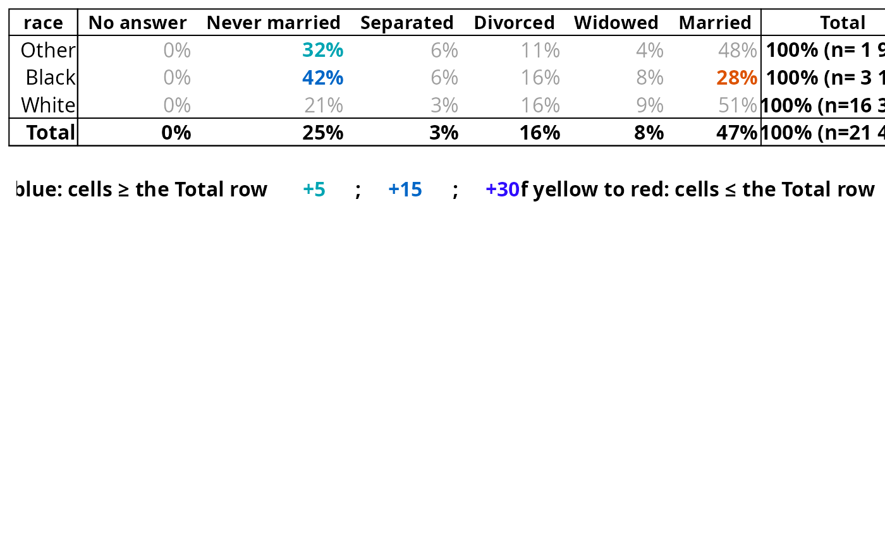

![[Superseded]](figures/lifecycle-superseded.svg)
Superseded (2.0.0): tab_plot() renders a tabxplor table as a ggpubr image, but its
display is limited and it is no longer actively developed. It keeps working and is retained for a
future redesign; prefer tab_kable (HTML), tab_md (markdown) or
tab_xl (Excel).
Usage
tab_plot(
tabs,
theme = NULL,
color_type = lifecycle::deprecated(),
html_24_bit = NULL,
color = TRUE,
color_legend = TRUE,
lang = NULL,
caption = NULL,
transpose = FALSE,
var_names = NULL,
wrap_rows = 35,
wrap_cols = 14,
whitespace_only = TRUE
)Arguments
- tabs
- theme
By default, a white table with black text, Set to
"dark"for a black table with white text.- color_type
![[Deprecated]](figures/lifecycle-deprecated.svg) Inert since 2.0.0: the text channel always uses
the text palette. The colour CHANNEL is chosen by
Inert since 2.0.0: the text channel always uses
the text palette. The colour CHANNEL is chosen by color = c(text, background)(seetab).- html_24_bit
- Inert since 2.0.0: exports are always
24-bit (the OKLCH palettes). Kept only so old calls do not error.
- color
Set to
FALSEto render the table without colours (monochrome).- color_legend
Print colors legend below the table ?
- lang
Colour-legend language:
NULL(auto from the R/OS locale, English fallback),"en"or"fr".- caption
The table caption.
- transpose
Set to
TRUEto transpose the table before export (rows become columns).- var_names
Which variable names to write beside the table:
"both"(the default),"rows","cols"or"none". Seetab_kable.- wrap_rows
By default, rownames are wrapped when larger than 30 characters.
- wrap_cols
By default, colnames are wrapped when larger than 12 characters.
- whitespace_only
Set to
FALSEto wrap also on non whitespace characters.
Value
A ggplot object to be printed in the
RStudio Plots pane or exported as image, using ggtexttable.
Examples
# \donttest{
# ggpubr / gtable / ggplot2 are Suggests-only and tab_plot() stops without them, so guard the
# example: \donttest{} does NOT exempt it from R CMD check --as-cran, which CRAN also runs
# without Suggests installed.
if (requireNamespace("ggpubr", quietly = TRUE) &&
requireNamespace("gtable", quietly = TRUE) &&
requireNamespace("ggplot2", quietly = TRUE)) {
tab(forcats::gss_cat, race, marital, pct = "row", color = "diff") |>
tab_plot()
}

# }